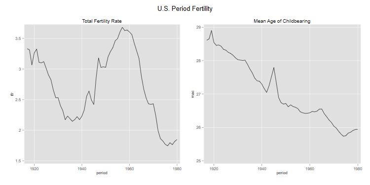

<h2 id="fertility-in-the-u.s.-1917-1980">Fertility in the U.S.
1917-1980</h2>
<p>We will use the Heuser cohort fertility tables available in the OPR
data archive to have a look at fertility in the U.S. between 1917 and
1980. For a much more extensive analysis see the paper by Schoen (2004)
“Timing Effects and the Interpretation of Period Fertility”, Demography
41(4):801-819, available in <a
href="http:/www.jstor.org/stable/1515231">JSTOR</a>. Also, the human
fertility database has data for 1933-2013 and can be used to extend this
series to the more recent past.</p>
<p>I did some preliminary work to put the archive data in a more usable
form. The file <code>heuser.dat</code> in the datasets section is a 36
by 64 matrix of single-year age-period rates for ages 14 to 49 and years
1917 to 1980. This is easy to read into our software.</p>

{% include srtabs.html %}

<pre class='stata'>. infile y1917-y1980 using ///
>   https://grodri.github.io/datasets/heuser.dat, clear
(36 observations read)

. gen age = 13.5 + _n  // ages 14.5 to 49.5
</pre>
<pre class='r'>> library(dplyr)
> heuser_wide &lt;- read.table("https://grodri.github.io/datasets/heuser.dat", 
+   header=FALSE) 
> heuser_wide &lt;- mutate(heuser_wide, age = 13.5 + row_number())
> # will convert immediately to long format
> library(tidyr)
> heuser &lt;- gather(heuser_wide, key="year", value="asfr", -age)
> heuser &lt;- mutate(heuser,  year = 1916 + as.numeric(substr(year,2,3)))
</pre>
<p>In the sections below we will be looking at period and cohort
fertility, but it is important to remember that we are dealing with an
age-period-cohort surface. In class we will use dynamic 3-D graphs to
explore the entire surface.</p>
<h3 id="period-fertility">Period Fertility</h3>
<p>You may want to plot the age-specific fertility rates for selected
years, for example 1935, 1945 and 1955</p>
<pre class='stata'>. line y1935  y1945  y1955 age,   lp(solid longdash dash) ///
>   title(U.S. Age-Specific Period Fertility) ///
>   legend(order(1 "1935" 2 "1945" 3 "1955") ring(0) col(1) pos(1))

. graph export uspasfr.png, width(500) replace
file uspasfr.png saved as PNG format
</pre>
<p></p>
<pre class='r'>> library(ggplot2)
> selected &lt;- filter(heuser, year==1935 | year == 1945 | year == 1955) |>
+   mutate(year = as.factor(year))
> ggplot(selected, aes(age, asfr, color=year)) + geom_line() + 
+   ggtitle("U.S. Age-Specific Period Fertility")
> ggsave("uspasfrr.png", width = 500/72, height = 400/72, dpi = 72)
</pre>
<p></p>
<p>The TFRs shows an increase over these years, from 2.2 to 3.5 children
per woman.</p>
<pre class='stata'>. tabstat y1935 y1945 y1955, stat(sum)

   Stats │     y1935     y1945     y1955
─────────┼──────────────────────────────
     Sum │    2.1887    2.4218    3.4983
─────────┴──────────────────────────────
</pre>
<pre class='r'>> group_by(selected, year) |> summarize(tfr = sum(asfr))
# A tibble: 3 × 2
  year    tfr
  &lt;fct> &lt;dbl>
1 1935   2.19
2 1945   2.42
3 1955   3.50
</pre>
<p>Let us compute the TFR and the mean age of childbearing for all years
(named <code>tfr</code> and <code>mac</code>).</p>
<pre class='stata'>. set obs 64 // make room  for 64 years
Number of observations (_N) was 36, now 64.

. mata:
───────────────────────────────────────────────── mata (type end to exit) ──────
:   rates = st_data(1::36, 1..64)

:   ones = J(36,1,1)

:   tfr = ones'rates

:   st_store(.,st_addvar("float","tfr"),tfr')

:   ages = st_data(1::36,"age")

:   mac = ages'rates :/ tfr

:   st_store(.,st_addvar("float","mac"),mac')

: end
────────────────────────────────────────────────────────────────────────────────

. gen period = 1916 + _n
</pre>
<pre class='r'>> periods &lt;- group_by(heuser, year) |>
+   summarize(tfr = sum(asfr), mac = weighted.mean(age, asfr))  
</pre>
<p>We can now plot the TFR and the mean age of childbearing, which we
will do in separate panels</p>
<pre class='stata'>. line tfr period, name(tfr,replace) title(Total Fertility Rate)

. line mac period, name(mac,replace) title(Mean Age of Childbearing)

. graph combine tfr mac,  xsize(6) ysize(3) ///
>   title("U.S. Period Fertility") name(periods)

. graph export ustfrmac.png, width(750) replace
file ustfrmac.png saved as PNG format
</pre>
<p></p>
<pre class='r'>> library(gridExtra)
> p1 &lt;- ggplot(periods, aes(year, tfr)) + geom_line() + ggtitle("Period TFR")
> p2 &lt;- ggplot(periods, aes(year, mac)) + geom_line() + ggtitle("Period MAC")
> g &lt;- arrangeGrob(p1, p2, ncol = 2)
> ggsave("ustfrmacr.png", plot = g, width = 10, height = 5, dpi = 72)
</pre>
<p></p>
<p>We see that the decline in fertility betwen 1920 and 1940 was
followed by the famous baby boom, while period mean age of childbearing
declined steadily except for a blip after the war.</p>
<h3 id="cohort-fertility">Cohort Fertility</h3>
<p>The data contain the complete fertility experience of 29 cohorts,
starting with the cohort of 1903, aged 14 at the start of the series in
1917, and ending with the cohort of 1930, aged 49 at the end of the
series in 1980.</p>
<p>To compute cohort summaries we need to extract the appropriate
diagonal entries from the age-period array of rates <span class="r">and
store them as new variables called c1903 to c1917</span></p>
<pre class='stata'>. mata:
───────────────────────────────────────────────── mata (type end to exit) ──────
:   ageperiod = st_data(1::36,1..64)        

:   nages = rows(ageperiod)

:   ncohorts = cols(ageperiod) - nages + 1

:   cohort = J(nages,1,0)

:   for (j = 1; j &lt;= ncohorts; j++) {
>     for (i=1; i &lt;= nages; i++) {
>       cohort[i] = ageperiod[i,i+j-1]
>     }
>     name = "c" + strofreal(1902+j)
>     st_store(1::36,st_addvar("float",name),cohort)
>   }

: end
────────────────────────────────────────────────────────────────────────────────
</pre>
<pre class='r'>> heuser &lt;- mutate(heuser, cohort = year - age + 0.5)
</pre>
<p>Here is a plot of cohort age-specific fertility for the cohorts born
in 1910, 1920 and 1930, which were at their peak fertility ages in the
period plotted earlier</p>
<pre class='stata'>. line c1910 c1920 c1930 age, lp(solid longdash dash) ///
>   title(U.S. Age-Specific Cohort Fertility) ///
>   legend(order(1 "1910" 2 "1920" 3 "1930") ring(0) col(1) pos(1))

. graph export uscasfr.png, width(500) replace
file uscasfr.png saved as PNG format
</pre>
<p></p>
<pre class='r'>> selected &lt;- filter(heuser, cohort == 1910 | cohort == 1920 | cohort == 1930) |>
+ mutate(cohort = as.factor(cohort))
> ggplot(selected, aes(age, asfr, color=cohort)) + geom_line() +
+   ggtitle("U.S. Age-Specific Cohort Fertility")
> ggsave("uscasfrr.png", width = 500/72, height = 400/72, dpi = 72)
</pre>
<p></p>
<p>We will use the same sort of calculation we did for periods to
compute cohort total fertility rates and cohort mean ages of
childbearing for the cohorts with complete experience, 1903 to 1931.
(One could package these operations as separate functions for routine
use.)</p>
<pre class='stata'>. mata:
───────────────────────────────────────────────── mata (type end to exit) ──────
:   cols = st_varindex("c1903")..st_varindex("c1931")

:   rates = st_data(1::36,cols)

:   ones = J(36,1,1)

:   ctfr = ones'rates

:   st_store(1::length(cols),st_addvar("float","ctfr"),ctfr')

:   ages = st_data(1::36,"age")

:   cmac = ages'rates :/ ctfr

:   st_store(1::length(cols),st_addvar("float","cmac"),cmac')

: end
────────────────────────────────────────────────────────────────────────────────

. gen cohort = 1902 + _n in 1/29
(35 missing values generated)
</pre>
<pre class='r'>> cohorts &lt;- filter(heuser, cohort >= 1903, cohort &lt;= 1931) |> 
+   group_by(cohort) |>
+   summarize(tfr = sum(asfr), mac = weighted.mean(age, asfr))
</pre>
<p>We now have the data needed for our plot</p>
<pre class='stata'>. line ctfr cohort, name(ctfr,replace) title(Total Fertility Rate)

. line cmac cohort, name(cmac,replace) title(Mean Age of Childbearing)

. graph combine ctfr cmac, xsize(6) ysize(3) ///
>   title("U.S. Cohort Fertility") 

. graph export uscohorts.png, width(750) replace
file uscohorts.png saved as PNG format
</pre>
<p></p>
<pre class='r'>> c1 &lt;- ggplot(cohorts, aes(cohort, tfr)) + geom_line() + ggtitle("Cohort TFR")
> c2 &lt;- ggplot(cohorts, aes(cohort, mac)) + geom_line() + ggtitle("Cohort MAC")
> g &lt;- arrangeGrob(c1, c2, ncol = 2)
> ggsave("uscohortsr.png", plot = g, width = 10, height = 5, dpi = 72)
</pre>
<p></p>
<p>As you can see, the story from the cohort perspective looks a bit
different, particularly in terms of mean age of childbearing, which
increased and then declined steadily.</p>
<h3 id="ryders-translation">Ryder’s Translation</h3>
<p>How can we reconcile these results? Let us start by plotting the
period and cohort TFRs on the same graph. To do this we follow Ryder in
dating a cohort’s fertility using its mean age of childbearing. The
cohort of 1903 had a TFR of 2.44 with a mean age of childbearing of 26.9
so we plot this TFR in 1929.9.</p>
<pre class='stata'>. gen cc = 1902 + _n + cmac // cc for cohort centroid
(35 missing values generated)

. twoway (line tfr period ) (line ctfr cc, lp(dash)), ///
>   legend (order(1 "period" 2 "cohort") ring(0) pos(7)) ///
>   title("U.S. Cohort and Period Total Fertility Rates")

. graph export uspctfr.png, width(500) replace
file uspctfr.png saved as PNG format
</pre>
<p></p>
<pre class='r'>> cohorts &lt;- mutate(cohorts, year = cohort + mac)
> ggplot(periods,aes(year,tfr)) + geom_line() +
+   geom_line(aes(year,tfr), data=cohorts, linetype=2) +
+   ggtitle("U.S. Cohort and Period Total Fertility Rates")
> ggsave("uspctfrr.png", width = 500/72, height = 400/72, dpi = 72)
</pre>
<p></p>
<p>We see that period fertility was lower than cohort fertility when the
cohorts were delaying childbearing, and higher than cohort fertility
when the cohorts moved childbearing to younger ages, leading to the
babyboom. This, of course, is exactly what one would expect from first
principles.</p>
<p>Ryder shows that, to a first order of approximation, the ratio of
period to cohort TFR’s is given by one minus the first derivative of
cohort mean age of childbearing, so</p>
<p>CTFR = TFR/(1 - r<sub>c</sub>)</p>
<p>with all cohort quantities evaluated for the cohort reaching its mean
of childbearing in the period of interest. We can easily see how well
this works, bearing in mind that a first order approximation will be
exact only if the rates change linearly over time.</p>
<p>We need a way to compute numerical derivatives. B-F recommend
estimating a derivative at time <em>t</em> by averaging changes between
<em>t-1</em> and <em>t</em> and between <em>t</em> and <em>t+1</em>,
which works out to be the same as half the change between <em>t-1</em>
and <em>t+1</em></p>
<pre class='stata'>. mata:
───────────────────────────────────────────────── mata (type end to exit) ──────
:   real colvector nder(real colvector v) {
>     n = length(v)
>     d = (v[3::n] - v[1::(n-2)] )/2
>     return( . \ d \ . )
>   }

: end
────────────────────────────────────────────────────────────────────────────────
</pre>
<pre class='r'>> nder &lt;- function(v) {
+   n &lt;- length(v)
+   c(NA, (v[3:n] - v[1:(n-2)])/2, NA)
+ }
</pre>
<p>We now use this function to compute the derivative of the cohort mean
ages of childbearing</p>
<pre class='stata'>. mata:
───────────────────────────────────────────────── mata (type end to exit) ──────
:   mac = st_data(1::29,"cmac")

:   d = nder(mac)

:   st_store(1::29, st_addvar("float","rc"), d)

: end
────────────────────────────────────────────────────────────────────────────────
</pre>
<pre class='r'>> cohorts &lt;- mutate(cohorts, rc = nder(mac))
</pre>
<p>We now take the cohort rates, multiply them by 1-rc to obtain a
period translation, and plot them at the cohort’s mean age of
childbearing. The result should be an approximation to the period
TFR:</p>
<pre class='stata'>. gen ctr = ctfr*(1 - rc)   // ctr for cohort translation
(37 missing values generated)

. line tfr period || line ctr cc, lp(dash) || line ctfr cc, lp(longdash) ///
>   title("Ryder's Demographic Translation") ///
>   subtitle("U.S. Fertility 1917-1980") ///
>   legend(order(1 "period" 2 "cohort" 3 "translation") row(1) ring(0) pos(7))

. graph export usryder.png, width(500) replace
file usryder.png saved as PNG format
</pre>
<p></p>
<pre class='r'>> cohorts &lt;- mutate(cohorts, ctr = tfr * (1 - rc))
> ggplot(periods,aes(year,tfr)) + geom_line() +
+   geom_line(aes(year,tfr), data=cohorts, linetype=2)  +
+   geom_line(aes(year,ctr), data=cohorts, linetype=3) +
+   ggtitle("Ryder's Demograhic Translation - U.S. 1917-1980")
> ggsave("usryderr.png", width = 500/72, height = 400/72, dpi = 72)
</pre>
<p></p>
<p>The translation is smoother than the observed period TFR, but seems
to track it reasonably well, usually identifying correctly times where
the period TFR is above or below the completed family size of the
relevant cohort.</p>
<h3 id="the-bongaarts-feeney-adjustment">The Bongaarts-Feeney
Adjustment</h3>
<p>Bongaarts and Feeney proposed adjusting the period TFR by dividing it
by one minus the first derivative of period mean age of childbearing,
so</p>
<p>TFR<sup>*</sup> = TFR/(1-r<sub>p</sub>).</p>
<p>Let us calculate this measure to see what it does. Note that B-F
prefer calculating the adjustment separately by birth order using rates
that divide births of a given order by all women. I will simply use all
births and refer you to Schoen’s paper for the results using B-F’s
preferred method. The paper by Keilman discusses the use of hazard
rates.</p>
<p>We start by computing the derivative of <em>period</em> mean age of
childbearing using our handy numerical derivative function, and then use
this to compute the adjusted TFR</p>
<pre class='stata'>. mata:
───────────────────────────────────────────────── mata (type end to exit) ──────
:   mac = st_data(1::64,"mac")

:   rp = nder(mac)

:   st_store(1::64,st_addvar("float","rp"), rp)

: end
────────────────────────────────────────────────────────────────────────────────

. gen tfrs = tfr/(1-rp)   // tfrs for TFR*
(2 missing values generated)

. twoway (line tfr period) (line tfrs period, lp(dash)),  ///
>   title("Bongaarts-Feeney Tempo-Adjusted TFR") ///
>   subtitle("U.S. Fertility 1917-1980") ///
>   legend(order(1 "TFR" 2 "TFR-BF") ring(0) pos(7))

. graph export ustfrbf.png, width(500) replace
file ustfrbf.png saved as PNG format
</pre>
<p></p>
<pre class='r'>> periods &lt;- mutate(periods, 
+   rp = nder(mac),
+   tfrs = tfr/(1 - rp))
> ggplot(periods,aes(year,tfr)) + geom_line() +
+   geom_line(aes(year,tfrs), linetype=2)  +
+   ggtitle("Bongaarts-Feeney Rempo-Adjusted TFR")
> ggsave("ustfrbfr.png", width = 500/72, height = 400/72, dpi = 72)
</pre>
<p></p>
<p>Reassuringly, these results agree exactly with Schoen, as you can
verify by listing a few values. He calls TFR the B-F preferred version,
and TFR* the simpler version used here. Comparing his Figure 1 with ours
we see that both adjusted TFR’s behave similarly, although the preferred
measure seems a bit less erratic than the simpler one.</p>
<p>I’ll let you draw you own conclusions from the graph. Bear in mind
that the adjusted TFR is a pure period measure and does not try to
estimate cohort quantities. It can be interpreted as a counterfactual
measure, what the period TFR would have been if women had not changed
the timing of births. It is also the number of children a synthetic
cohort would have if the period rates continued to shift by age at the
same rate. In both cases the interpretation relies on a period shift
model, where all women delay or anticipate childbearing at the same
rate.</p>
